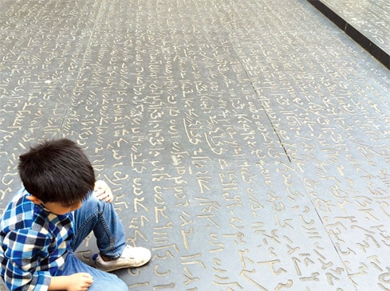

Champollion, Rosetta Stone và sự giải mã chữ cổ Ai Cập

Cho đến đầu thế kỷ 19, chữ cổ Ai Cập vẫn chưa được giải mã. Người ta vẫn không hiểu những dòng chữ trên các khu mộ cổ, trên những đền đài Ai Cập có ý nghĩa gì. Một bước ngoặt trong việc giải mã chữ Ai Cập cổ đến từ cuộc viễn chinh của Napoléon đến xứ sở này, nơi đội quân của ông tìm thấy tảng đá Rosetta đặc biệt – trên đó xuất hiện cùng lúc 3 hệ thống chữ viết: chữ Hy Lạp cổ đã được giải mã, và hai loại chữ Ai Cập cổ là chữ Démotique và chữ Hiéroglyphes. Rủi ro thay, quân Pháp bị quân Anh đánh bại năm 1801 tại Ai Cập và tảng đá quý đó bị quân Anh chôm mất. Nay tảng đá đó đang nằm trong British Museum ở London (tớ đã được tới thăm).
Những người nghiên cứu ở Pháp đành hài lòng với bản sao của tảng đá, nhưng chính họ lại là những người giải mã thành công hai hệ thống chữ Démotique, với công lớn của Silvestre de Sacy, và Hiéroglyphes với công to của Champollion (học trò của Sacy).
Hiéroglyphes là loại chữ cổ nhất (xuất hiện từ khoảng năm 3200 trước công nguyên) trong 4 hệ thống chữ Ai Cập cổ, và việc giải mã được nó mở ra một giai đoạn khám phá rực rỡ về Ai Cập cổ đại trong thế kỷ 19.
Điểm mấu chốt trong việc giải mã chữ Hiéroglyphes đến từ sự đặc biệt của tảng đá Rosetta: cả ba hệ thống chữ trên tảng đá đều viết về cùng một nội dung. Do chữ Hy Lạp cổ đã được giải mã từ lâu, người ta hiểu được nội dung viết gì, và từ đó đối chiếu với các ký hiệu của hệ thống Hiéroglyphes để giải mã! Đó có thể coi là khai sinh của loại tấn công Chosen Plaintext Attack hiện được nghiên cứu trong mật mã: kẻ tấn công biết nội dung của một bản mã, và cố gắng giải các bản mã khác.
Nói đơn giản như vậy nhưng quá trình giải mã chữ Hiéroglyphes của Champollion thực sự kỳ công, trải dài hơn 10 năm, có những lúc hoàn toàn bế tắc, có những khi cạnh tranh khốc liệt với đồng nghiệp và nhóm nghiên cứu khác (như nhóm của Thomas Young bên Anh), có những khi đi đến những kết luận sai lầm (lúc thì cho rằng chữ Hiéroglyphes không có nghĩa đầy đủ, khi lại đi tới nhận định nó là loại chữ alphabetic). Tất cả nén đọng, để rồi cuối cùng ông đã giải mã được hoàn chỉnh chữ Hiéroglyphes, với bất ngờ là hệ thống chữ đó bao gồm cả sự kết hợp giữa cả chữ tượng hình và chữ alphabetic.
Ngôi nhà của Champollion tại Figeac nay trở thành bảo tàng về lịch sử khám phá chữ viết, trọng tâm là quá trình giải mã chữ Hiéroglyphes. Đến Sóc cũng phải nhận xét sau trọn 1 buổi đi thăm: sao mà bảo tàng này hay thế nhỉ ☺
Vẫn còn những hệ thống chữ viết cổ, đặc biệt là hệ thống chữ Linear A, còn chưa được giải mã! Bạn nào giải mã được nó sẽ giúp thế giới có thêm nhiều khám phá về quá khứ 😉